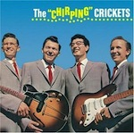

Top 100 Debut Albums (Part Two: 80 to 61)
Welcome to the second part of our Top 100 Debut Albums feature. Please use the links below to discover the rest of the feature. The fifth and final part will be published on Friday.
[Part One: 100 to 81] [Part Two: 80 to 61] [Part Three: 60 to 41] [Part Four: 40 to 21] [Part Five: 20 to 1]
80. BEASTIE BOYS
Licensed To Ill
(Def Jam/Columbia, 1986)
Mention music in the ‘80s, and most people won’t think of rap. Let alone punk-rap. Piggybacking the post-punk scene, three young New York rappers got together and channeled their aggression (and wit) into some seriously bad ass music. Licensed to Ill was not only the best rap album of the ‘80s, it was the best-selling rap album of the ‘80s. The album itself is a revolutionary combination of hip-hop swagger, punk riffs and some of the most unabashedly snarky rhymes ever recorded. With relentless pop culture parodies and seamless production from a then unknown Rick Rubin, Licensed to Ill is not only the Beastie Boys’ best, but one of the best rap albums ever made. (Lukas Clark-Memler)
Playlist: No Sleep Till Brooklyn
79. BUDDY HOLLY AND THE CRICKETS
The “Chirping” Crickets
(Brunswick, 1957)
Would the history of rock ‘n roll be the same without The Crickets? They were inspiration for bands like The Beatles, The Hollies, and The Rolling Stones. They proved that you don’t need to look like a matinee idol to connect with people, that the trappings of showbiz glitz will only get you so far if you don’t have the talent, that your music will keep evolving if you constantly reach within yourself. Bruce Springsteen once said that he played Buddy Holly every night before he got on stage to keep him honest, giving us a clue as to why this music still resonates. This is vital album, and if you’re a true rock ‘n roll fan, it should be in your record collection. (Angel Aguilar)
78. THE NOTORIOUS B.I.G
Ready To Die
(Bad Boy, 1994)
The creepy feeling we get from the foreshadowing in the title is just the beginning. The energy that Christopher Wallace stirred up in Ready To Die became an epidemic. What happened after its release will forever be a fairy tale from the gnarly side of hip-hop. Regardless of if you wanted to or not, you were listening to this story. As he so casually explains in Juicy “If you don’t know, now you know” finalizing the picture Biggie painted of his life. Everyone was listening. Race, age, class or geographical location did not matter. This was not an underground gem that happened to make it big. The intention was to involve everyone and become a ‘notorious’ compilation of success, death, money, love, sex and escaping from the ghetto. Despite the heaviness of the lyrics, there isn’t anything complicated about Ready to Die, and we loved him for it. The lyrics became neighborhood anthems and major hits like One More Chance and Big Poppa will forever be on the chopping block for a remix. As we kindly ask Mr. Big Poppa to rest in peace, we’ll forever remember the magnetic strength of this album that pulls generations of listeners together to enjoy a piece of the most outstanding hip hop on the planet. (Randi Dietiker)
 77. IRON & WINE
77. IRON & WINE
The Creek Drank The Cradle
(Sub Pop, 2002)
Sam Beam finally put his 4-track recorder to good use assembling a simple yet stunning debut. The sound is highly stylized and boldly reflects his exposure to the culture of the American South. Cooing autoharmonies accentuate his soft tone as he espouses bucolic lyrics tinted with themes of love and loss. Instrumentation is limited to banjo and fingerpicked and slide guitar, and the entire affair is devoid of percussion. Beam’s Southern Gothic poetry could stand alone on artistic merit, but the accompaniment, true to its purpose, enhances the beauty and transformational imagery. Together, the album is an emotional heavyweight capable of whisking anyone away to the pastoral landscape and romantically antiquated lifestyle idealized by its composer. (Ben Jones)
Playlist: Faded From The Winter
76. JOHNNY CASH
With His Hot And Blue Guitar
(Sun, 1957)
For many, Johnny Cash is mostly a symbol; a sort of generic, anti-establishment, college dorm room poster boy. In part, I get why: he’s a vaguely mysterious, larger-than-life personality whose cross-generational appeal has been recently boosted by his covers of Trent Reznor and Bonnie Prince Billy and, to a lesser degree, by the Joaquin Phoenix film. Cash was not a guitar prodigy nor an incredible songwriter, and yet few artists have been more influential to American music in the last 60 years. I think, quite simply, it’s his voice: perhaps the single most unique baritone ever. In his 1957 debut, Johnny Cash with His Hot And Blue Guitar, he introduced that unmistakable voice and stripped-down backing band on the legendary Sun Records label. His simple stories about blue collar life and God (I Walk the Line and Folsom Prision Blues are both on his debut) paired with that voice is a combination that evokes something rare: naked honesty. To this day, most people think Johnny Cash “shot a man in Reno just to watch him die”. (Alejandro Martinez)
75. KATE BUSH
The Kick Inside
(EMI, 1978)
Kate Bush first topped the UK charts at the age of 20 with Wuthering Heights, the chart busting single based on Emily Bronte’s novel of the same name. That song’s parent album, The Kick Inside, sees her wrap her high-pitched vocals around a complex collection of songs which are littered with literary and sexual references. The Kick Inside is not Kate Bush’s best work (that title would probably go to Hounds Of Love) but it is an important record because it announced the arrival of a unique artist who has since become an enigmatic national treasure. Kate Bush’s classically-informed, very English sense of artistry added a strong, compelling female voice to the male-dominated prog-rock movement of the late 70s. (Gary McGinley)
74. VAMPIRE WEEKEND
Vampire Weekend
(XL, 2007)
It can’t be their compositions, for they are too uneasy; twitchy little buggars that could annoy a deaf person. It can’t be their lyrics, for there are at best six ivy-covered, Bennington-clad existentialists who understand them. It can’t be lead-singer Ezra Koenig, for he seems uninterested in being an iconic frontman in the vein of James Murphy, Britt Daniel or Damon Albarn. So why is it that Contra, Vampire Weekend’s second record, debuted at #1 on the Billlboard 200 last year? The strength of Vampire Weekend is a big part of it. If anything, this record is proof that you can take a lot of strange turns in songwriting as long as you know exactly what you’re doing. Records as fully realized as this don’t come around too often. So even if you don’t like the songs, praise this record, if only for the cojones it took to pull this off. (Japie Stoppelenburg)
73. DAFT PUNK
Homework
(Virgin, 1997)
Few electronic artists are as iconic as Daft Punk. In a career spanning nearly twenty years, the electro duo have taken French house music to the mainstream, had their music sampled by countless artists (including, perhaps most notably, Kanye West), and headlined festivals the world over. And it all started with Homework. Home to some of Daft Punk's finest work to date, including Around the World, Da Funk and Revolution 909, Homework is quite simply one of the most revolutionary and powerful electronic albums ever created and placed Daft Punk firmly on everyone's radar. (Craig Stevens)
72. OASIS
Definitely Maybe
(Creation, 1993)
With their unified 18 year occupation of the public stage now dissolved, and the band’s heavyweights, the infamous Gallagher brothers, now moving on to pastures new, it feels a little more collectively tolerable to confess affinity for a band that may well be the least likeable act in history – the wonderful, the terrible, the unique, Oasis. One of the justifications – we may as well admit there aren’t many – is that debut record, the seminal Definitely Maybe. This record has its faults, faults which are all too easily plastered over by the generalisations of disgruntled fans happy to critically over-analyse the decline rather than the rise of one of the most significant British bands of all time. It doesn’t have subtlety, originality, intelligence, or beauty, but what it does have is a raft of some of the greatest pop songs of the 90s: the swooping falsettos of Up In The Sky; the roaring fervour of Rock ‘n’ Roll Star; the shameless riff behind Cigarettes and Alcohol; Married with Children’s plaintive tones; or the intimate, blossoming intro and glowering solo on Live Forever. These are songs that don’t die easy, and for good reason. So put the record on, and, for the next 52 minutes, stop complaining. (Joe Iliff)
Playlist: Not available on Spotify
71. THE MODERN LOVERS
The Modern Lovers
(Beserkley Records, 1976)
The Modern Lovers must be the greatest accidental debut of all-time. Released two years after the disintegration of Jonathan Richman’s original band, the album is essentially a compilation of demo recordings from 1971 and 1972. Richman may have never intended for these rough cuts to appear together on a commercially available record, but Beserkley clearly knew that they were sitting on something far too special to ignore. If The Modern Lovers had been an uneven mess, we’d all be criticising the label for cobbling together some random demos and having the audacity to call label the result ‘an album’. As we now know, The Modern Lovers turned out to be an undisputed proto-punk classic. Beserkley deserves some credit, alongside the original Modern Lovers, for recognising the true value of these extraordinary recordings. (David Coleman)
70. APHEX TWIN
Selected Ambient Works 85-92
(Apollo, 1992)
Richard D James has been compared to the likes of Mozart. I think he’s greater than Mozart; Mozart’s music can't compare to what James has done throughout his career, under any moniker. Yes, I’m serious. Selected Ambient Works Volume One should be listened to daily, like taking a multivitamin. It’s both an extremely fortified soundscape of the 90s and a nourishing escape from the bad imitators of the post-Eno ambient world. Like Jesus freed his wrongly accused buddies from prison, so did Aphex Twin from the oncoming tsunami wave called New Age. Then he gone done and upped himself with his other releases, proving that there’s a Stockhausen, John Cage, and Kraftwerk in all of us. Amen. (Michael Iovino)
69. THE WHITE STRIPES
The White Stripes
(Sympathy For The Record Industry, 1999)
The White Stripes were the weirdest kids on the block, singing about sweet love and salty heartbreak with Meg White’s primitive drumming backing the now well known garage blues rawness of Jack White and his red and white guitars. The White Stripes marks a fantastic starting point for a band of timeless, strange and undeniable appeal. This is where the story of The White Stripes began with their straight-from-a-tiny-amp-and-old-drum-kit-we-churn-golden-blues-of-the-new-generation sound that paved a candy cane flavored stream of notes which conquered modern rock. The album sounds just the same now as it did in ’99. It’s still out of place, it’s still atmospheric and beautiful and it’s still young. The kids are alright. (Luredo Marbery)
68. NEU!
Neu!
(Brain, 1972)
Neu!’s distinctive sound created on their 1972 debut album has remained audible in other artists’ work almost consistently since its inception; and although imitated, emulated and stolen to no end, nothing has been able to come close to matching the idiosyncratic wonders created by the opposing forces of Michael Rother and Klaus Dinger. Its fusion of ambience and rhythm and its balance between atmosphere and pace is simply perfect. Rother’s aquatic sense of fluidity and flow in his sonic explorations is countered by Dinger’s relentless and driving Motorik beat – an amalgamation that somehow shouldn’t work, but flows like molten lava. This record’s influence on the immediate and ensuing music created in the 1970s is unprecedented. It sold only 30,000 copies but much like The Velvet Underground, Neu!’s influence was greater and further reaching than their immediate appeal and the success they enjoyed when they existed. (Daniel Dylan Wray)
67. BLACK SABBATH
Black Sabbath
(Vertigo, 1970)
The 1960s crashed and burned with three landmark albums. Led Zeppelin’s second album eroticised and supersized the electric blues in late ‘69; the Stooges’ second album Fun House screamed out of the dirty streets of Detroit; and then Black Sabbath’s debut invented Heavy Metal, finally killing off flower power for good. The intro to track one, Black Sabbath, is possibly the greatest statement of intent in all of rock: a tolling bell, a crushing riff, “What is this I see before me?...” Other highlights such as The Wizard and N.I.B. transcend their potentially risible subject matter simply on the strength of the atmosphere created by the band, a hallucinatory and creepy menace that pervades throughout, something lacking in later albums. Though not influential at the time of release, Sabbath would have to wait 20 years to see their true legacy – Nirvana cited them as a key influence, and as a result a whole new generation discovered Birmingham’s finest. (David John Wood)
66. NEUTRAL MILK HOTEL
On Avery Island
(Merge, 1996)
Although this is not strictly Neutral Milk Hotel’s first release (Jeff Mangum released several tapes under this name years before to friends), it is the first on an actual label which was distributed to a wider audience. Whilst nowhere near as popular or critically acclaimed as its follow up In The Aeroplane Over The Sea, this is an astonishing album in its own right, featuring several of Mangum’s best songs (Song Against Sex and Gardenhead are as good as anything on Aeroplane). It is every bit as intense, harrowing and surreal, and listening to it is an equally blisteringly emotional experience. (Andrew Hirst)
Playlist: Gardenhead / Leave Me Alone
65. THE FUTUREHEADS
The Futureheads
(679, 2004)
Who would’ve ever thought that the noughties would bring back the uncontrollably exuberant sounds of British post-punk? Right about the time when radio stations were burning out Take Me Out, a quartet from the outskirts of Sunderland tweaked their vocal harmonies and blazoned a fiery stream of frenetic noise with as much class as Franz Ferdinand’s prattling flamboyance. A spiritual successor to the Jam’s jerky, hook-driven compositions, The Futureheads defied logic and reason with fifteen rhombus-shaped punk songs that, even if dauntingly abstract, were anthemic enough to shout along to with a big, fulsome smile. Its final result may leave you gasping for air, but once you let it rest and give it another go, it’ll refresh and delight just like those who discovered the post-punk movement in the late seventies. Sure, time hasn’t been as kind to the Futureheads (a fate deemed to the defiantly formless, I suppose), but their ingenious nervy pop is still in a class of its own. (Juan Edgardo Rodriguez)
64. ORANGE JUICE
You Can’t Hide Your Love Forever
(Polydor, 1982)
As recently as five years ago, it was practically impossible to find a physical copy of You Can’t Hide Your Love Forever. I’d been desperate to hear it since reading about the band in Simon Reynolds’ post-punk bible Rip It Up And Start Again (named after OJ’s biggest hit) and after a long search, I eventually picked up a vinyl copy for £25, which actually felt like a bargain at the time. Newcomers to the band will have no such trouble locating a copy: Domino has reissued the album on CD and it’s even streaming on Spotify. Times change, I guess. Orange Juice’s legacy was boosted by the post-punk revival of the early 2000s, but unlike a number of their contemporaries, their magnum opus has aged particularly well. There’s infectious jangle-pop (Falling And Laughing), self-deprecating humour (Untitled Melody, Consolation Prize), and even a strangely effective Al Green cover (L.O.V.E. Love) – to ask for more would just be plain greedy. (David Coleman)
Playlist: Falling And Laughing
63. THE SHINS
Oh, Inverted World
(Sub Pop, 2001)
Bands oftentimes explode onto the indie rock scene by pioneering some new, heavily stylized sound that spawns a brood of imitators before, eventually, becoming somehow indicative of a bygone era. That is not The Shins. Oh, Inverted World is a generic, prototypical indie-pop record. New Slang, arguably the most successful and recognizable track, is a simple progression in the key of C with crafty lyricism but very little window dressing beyond conventional instrumentation. It’s a barebones, no-gimmick approach, but it makes the content (and its success) all the more admirable. Composition, melody, and harmony are the only pegs on which the Albuquerque-based band can hang their sombrero, and they prove proficient in all, even on the first go-round, and even with the most challenging aspects of music-making pushed to the foreground. Kudos to The Shins. (Ben Jones)
62. ARCTIC MONKEYS
Whatever People Say I Am, That’s What I’m Not
(Domino, 2006)
The album’s title comes from Arthur Seaton, Saturday Night And Sunday Morning’s working class antihero. There are more parallels between Allan Sillitoe’s novel and the Arctics first album. This is music about bar-hopping, dirty dancefloors, and promiscuous sex; about eking out a tiny bit of life after the daily drudgery of a meaningless job. Even so, industrial towns still offer some space for romance and poetry. Alex Turner is a cool observer of human behavior, and with a smart turn of phrase he can steer you from The Ritz to the rubble. The album was the biggest selling debut in UK history. If you listen to it today without record company hype, you’ll find that the popularity is well earned. The Arctics are still one of the most exciting bands around, and long may they thrive. As Arthur Seaton would say, “It’s a great life if you don’t weaken”. (Angel Aguilar)
 61. GUNS N’ ROSES
61. GUNS N’ ROSES
Appetite For Destruction
(Geffen, 1987)
Guns N’ Roses, we know, are a joke. A saggy Axl Rose, prancing around like the embarrassing uncle at a family wedding, endlessly delaying underwhelming comeback albums, hiring and firing on a whim, does not a rock’n’roll hero make. But in 1987 Gn’R vied for the title of biggest, baddest band in the world. Cramming in offensive artwork, songs about heroin, sampled sex noises and hairstyles to frighten Madame de Pompadour, Appetite is 53 minutes of punk-inflected sleazy metal with a superabundance of classic rock moments. Welcome To The Jungle sets the tone: Slash’s overdriven Les Paul introduces a dirty, swaggering groove topped with Rose’s high-pitched doggerel. From there it’s full tilt through to Rocket Queen, and you’ve just listened to one of the biggest bands ever strut their 28 million selling stuff. You might be reluctant to let on to your hipster friends, but you’ve loved it. (Simon Briercliffe)
. . .
[Part One: 100 to 81] [Part Two: 80 to 61] [Part Three: 60 to 41] [Part Four: 40 to 21] [Part Five: 20 to 1]
29 November, 2011 - 07:07 — No Ripcord Staff